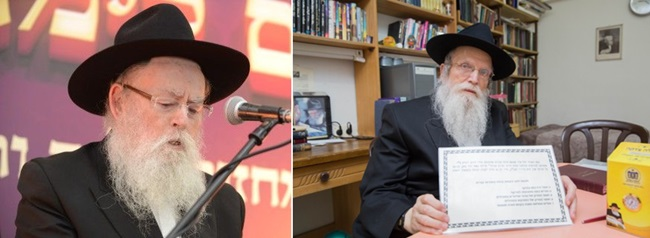

Guiding Petitioners to the Rebbe
Rabbi Elimelech Shachar is the intensely busy director of the Chabad schools in Rechovot, while Rabbi Yaakov Reinitz is the legendary madrich of the Chabad yeshiva in Lud for the past 55 years. Both of them connect Jews to the Rebbe and serve as an address for those who wish to write to the Rebbe.* They speak about their special shlichus in guiding people to write to the Rebbe and the challenges they encounter. * How do they explain what Chitas is and why it’s important to attend a farbrengen? What do they do when there isn’t a clear answer in the Igros? And what does “azkir al ha’tziyun” mean? * As well as… a rare note from the Rebbe with detailed instructions about writing to him. All this, plus stories and miracles.
By Zalman Tzorfati

Rabbi Elimelech Shachar is the director of the Chabad schools in Rechovot and is one of the dominant figures in the community who for many years has been guiding the mosdos forward and is responsible, to a great extent, for the success of the Chabad empire in Rechovot.
What they have in common is that they devote time to helping people who want to write to the Rebbe.
“There is a letter that the Rebbe wrote to the mashpia, R’ Shlomo Chaim Kesselman, before he accepted the nesius, and when R’ Shlomo Chaim was in Paris. The Rebbe writes him a sharp letter in which he asks why he does not connect the Jewish refugees in Paris, after the Holocaust, to the Rebbe [Rayatz].” Says R’ Reinitz, “In this letter, the Rebbe tells of a person who did not see the previous Rebbe, did not learn in Tomchei T’mimim, and did not have a beard, who when he met a woman with problems, told her, ‘There is a Rebbe in Israel.’ She wrote a letter and the Rebbe Rayatz answered her. Thanks to the Rebbe’s answer, her Judaism was strengthened. The Rebbe writes to R’ Shlomo Chaim, ‘You learned in Lubavitch! You are a mashpia! And a Jew comes along who does not personally know the Rebbe, but knows there is a Rebbe in Israel and takes a woman who needs a bracha and writes a letter to the Rebbe with her. Where are you?’
“I often think of this letter. It gives me the strength to continue helping people and writing to the Rebbe with them. This is how I help them connect to the neshama klalis.”
R’ Reinitz has been helping people write to the Rebbe since the early 70’s. It started when immigrants from Georgia moved into Shikun Chabad in Lud, including Rabbi Refael Alashvili, known as Chacham Refael. He was the spiritual leader of the Georgians.
“Chacham Refael and I were friends and when they asked him about things he could not help them with, he referred them to me so I could write with them to the Rebbe.” This is how R’ Reinitz got the unofficial job as the go-between and one who helped people write to the Rebbe.
Word about the Chassid in Lud who would write with you and send a letter to the Lubavitcher Rebbe in New York got around, beyond the Georgian community and beyond Lud. Strangers calling and knocking at his door, who wanted to write to the Rebbe, became part of life for the Reinitz family in Lud. When he wasn’t busy with work at the yeshiva, he was often busy writing to the Rebbe or conveying answers from the Rebbe.
R’ Reinitz was surprised one day, with the Rebbe’s personal reaction to his activities. It was when one of the letters he received had an extra note from the Rebbe with guidance about how to handle those who wanted to write to him.
“In one of the letters that I got from the Rebbe there was a note which said, ‘Surely you will explain to all those who seek a bracha, that their conduct in daily life needs to be in accordance with the instructions of our Torah, the Torah of life, and the fulfillment of mitzvos, as it says, “and you shall live with them.” In addition to the main thing, that it is a command of G-d, this is the way to receive a blessing for one’s needs.’
“It was a long and narrow note and I received it without my having written or said anything about my writing with people. The Rebbe, on his own, wrote the note and included it with the letter I received.
“Since then, when I write with people, I tell them that if you want a bracha from the Rebbe, you need to make a good hachlata, to add something beyond what you already do. I explain that we don’t do mitzvos in order to receive blessings, but to fulfill G-d’s will. At the same time though, this is a channel by which to receive a blessing from G-d.”
If you thought that after Gimmel Tammuz he has less work, you thought wrong. “The writing picked up significantly after Gimmel Tammuz,” explains R’ Reinitz. “People come to me from all over the country, and they call. People whom I don’t know come and want to write. Sometimes people tell me how they got to me, but most of the time I don’t know. The number of people wanting to write to the Rebbe is growing.”
R’ Shachar is also someone many people turn to when they want to write to the Rebbe. Despite his many involvements in running mosdos, when someone asks for this kind of help, he puts his other work aside and gives the person his full attention.
“I started with this in 5757, a little over two years after Gimmel Tammuz, when writing and asking the Rebbe for a bracha through the Igros Kodesh began to become public knowledge. I started getting requests from people. Later, the Merkaz Igros Kodesh was opened by R’ Hertzl Borochov, but even before that, we devoted time to helping people write to the Rebbe.
R’ Shachar asserts, “It is impossible to describe the importance of writing to the Rebbe, and especially nowadays. This is the one thing that connects Jews to the Rebbe more than any other. When a Jew sits and writes to the Rebbe, the very act of writing connects his soul to the neshama klalis. And if he also receives an answer or sees a personal salvation as a result, then it is a kiddush Hashem and a miracle that ends up being publicized within that Jew’s close, and even not so close, social circle.”
Despite the years that have passed, the directive that R’ Reinitz received from the Rebbe is something he always bears in mind, and he is particular about adhering to those instructions. “Whoever comes to me, I explain to him the matter of a good hachlata, and it works. We are constantly seeing miracles and wonders.”
R’ Reinitz tries to direct those who turn to him to maintain a connection with their local shliach, whether to provide help in carrying out the positive resolution, or simply to get to know them and have an ongoing relationship with the shliach or local prominent Chassid.
“Today, a woman from Hadera called me,” says R’ Reinitz, recounting a fresh story. “She told me that she is in a long-term relationship with a young man her age of Ethiopian descent. However, lately she has started on a journey of drawing closer to Judaism and becoming a baalas t’shuva. She requested to ask the Rebbe if she should continue on a path towards marriage with that young man, despite the fact that he is not observant, in the hope that he will eventually get on board, or to drop him.
“I wrote to the Rebbe that she is asking for a blessing for her true and proper match, and that she will build a home on the foundations of Torah and mitzvos. The Rebbe’s answer was, ‘Awaiting good news b’karov mamash.’ I told her that the Rebbe did not respond regarding the fellow in question, but he blessed her that with Hashem’s help there will be good news regarding a match.
“During the conversation, I asked her if she knows anyone from Chabad in Hadera, and she mentioned the name of one of the shluchim. I told her that he is a former student of mine and asked her to send him my regards.
“Generally, I do not ask the family name or personal details. However, sometimes people will volunteer the information themselves. Some feel more open and willing to share, and end up telling me amazing miracle stories, instances of divine providence and open miracles. People who come with downcast faces, leave with a big and happy smile. They see the bracha of the Rebbe, as if literally having entered into a yechidus with the Rebbe, handing him a note and exiting with a blessing. If I would start tracking and recording every miracle, I would have to work at it as a full time job.”
Who are those that come seeking a bracha from the Rebbe?
They both answer, “Everybody. There is no specific profile for those who come.”
R’ Reinitz: People come from every demographic and of all types. Even from Anash, there are those who, for whatever reason, prefer to send their requests through my agency. When people from Anash come, I speak to them about davening with proper concentration from inside the siddur, learning Chassidus, investing more in the chinuch of their children, and establishing set times for Torah learning. With not yet practicing Jews, I speak about saying T’hillim, giving more tz’daka, putting on t’fillin, wearing tzitzis, in other words, practical things.”
R’ Shachar: I have noticed that most of those who contact me are females. (I ask him how he explains the phenomenon, and he continues): Throughout all of history, women have shown that their emuna is stronger. That was the case in the Exodus from Egypt, “In the merit of the righteous women, our forefathers were redeemed,” and that is how it will be in the future Redemption. With them, there are no doubts or rationalizations. They believe with simplicity, “And they believed in Hashem and Moshe His servant.”
Among the many good resolutions, is there one that stands out for you as special?
R’ Reinitz: There are many. For example, every time that we read Parshas Chukas, I am always reminded of the following story.
A Jew came to my house to write to the Rebbe. He was happy with his job and makes a nice living. However, he was having trouble with his manager, and he came to ask if he should leave and look for another job.
Generally, whoever comes in person, I will show him the note that the Rebbe sent to me, and will ask him to wash his hands as we do in the morning; set aside a few coins for tz’daka; say the Rebbe’s chapter of T’hillim and his own; make a good resolution in Torah and mitzvos. Only after he does that will we open to read the answer.
So, I asked him if he took on a good resolution, and told him that I am not asking him what the resolution is about. He is a mesorati (traditional) Jew, and he told me that he took upon himself to say T’hillim. Before inserting the letter, he proclaimed three times “Yechi Adoneinu,” and “We want Moshiach now,” and then put it into the Igros Kodesh.
He began to read the letter, but he saw no connection to what he had written. It was a letter in one of the first volumes of Igros Kodesh, which contains a lengthy halachic disquisition on the subject of the “red heifer.” He could not understand what the Rebbe wanted from him.
I asked him to continue reading until the end. In the final lines of the letter, the Rebbe writes that the matter of the “red heifer” was only during the time that the Beis HaMikdash was standing. When a person was in a state of avi avos ha’tumah (i.e., the deepest depths of impurity), he would go to the Kohen who would sprinkle on him to purify him. However, today, when we do not have a Beis HaMikdash, what should a person do if he finds himself in a state of avi avos ha’tumah? He should go to his rav, and the rav should give him a course of rectification, and he will achieve forgiveness.
I finished reading the letter myself and did not see any connection to what he had written, but he responded with unusual excitement, “I have an answer! The Rebbe really got inside my head.” He continued, “Look at how I am shaking, and my hair is standing on end.” He was very agitated, and I just stood there in shock with no idea of what he was talking about.
Then he told me that he is living in a second marriage, despite the fact that he did not give a halachic divorce to his first wife. “The Rebbe is telling me that ‘you are in a state of avi avos ha’tumah, and you have nothing better to do now than bother me with questions about livelihood? Is that where your head is at right now?! Go to a rav, and ask him for a way to rectify your actions.’” That is what he told me and he was really emotional.
It was almost 10 pm, and I told him that I had to go out to daven Maariv. He immediately said that he was coming with me. He stood there and davened and cried like someone at the N’ila service at the conclusion of Yom Kippur. It was clear that something had really moved inside his soul. Afterward, he told me that he attended a Chabad school in one of the smaller cities as a child, and he had heard about the Rebbe, “But this is the first time that the Rebbe grabbed hold of me so powerfully.”
How do you explain to people about the deep significance of writing to and connecting to the Rebbe?
First off, I explain that the Rebbe is the Rosh B’nei Yisroel (lit. head of the Jewish people). That is the first thing a person needs to know. This is the belief that accompanies us when we approach writing to the Rebbe. We are not connecting with a book and we are not “writing to the Igros.” We are writing to the Rebbe. Before we put the letter into a volume, I tell them that “Now it is leaving our hands and going into the hands of the Rebbe MH”M.” Then I will take out a random volume and open it, without knowing what volume or page. When they receive the answer, I tell them that it is not from the book, but rather is an answer from the Rebbe.
There are times that people will ask me, “Give me a bracha.” I explain to them that the blessing is not the main thing, although it is important and certainly the Rebbe is blessing them, but if you don’t fulfill what the Rebbe is telling you in the letter, it is as if you just wrote for nothing. The Rebbe himself writes in many places that the farmer prays for rain, and rain is a blessing. However, that is only if you plow and plant. Without doing the work, nothing will grow there except for weeds. What the Rebbe tells you, even if it seems strange to you, is the channel to receive the bracha.
A member of Anash once came here, who worked in the technology sector (hi-tech). The company closed its doors, and he was working all sorts of odd jobs, but he was looking for a position that suited his talents and would provide a steady livelihood. He wrote to the Rebbe, and the Rebbe’s answer was that having set times for Torah study would be the channel to receive the bracha. We set a time to study the “D’var Malchus” together once a week, and a short while later he received a respectable job offer from a place that was completely off his radar. Boruch Hashem, he has been working there for a number of years and is successful, and he even does outreach activities there.
I had another story once that seems like it comes straight from the stories of the Baal Shem Tov. Somebody came with a friend who was a recent immigrant from Russia, who had begun to become observant and to keep Shabbos and kosher. Generally, people come to ask about a livelihood, health, or various problems, but this Jew asked for a blessing from the Rebbe for becoming stronger in Torah and mitzvos.
It turns out that his profession is as a singer, who makes his living mostly from concerts and appearances in all sorts of dubious places. He worked under an impresario, also from Russia, who was a real tough and violent fellow, with problematic contacts in even more problematic places.
He had recently been informed that the manager had succeeded in organizing, after a lot of hard work, a concert tour of night clubs throughout Russia. The plan was already completely finalized, the dates were set and everything had been worked out to the smallest details.
The singer was extremely disturbed by the whole thing, as it would involve desecrating Shabbos and Yom Tov, and entail great difficulty in keeping kosher, not to mention the issues of modesty and other problems. This bothered him a great deal, as someone who had begun the process of return and was already observing many mitzvos. On the other hand, it was clear that the manager would not take well to a cancellation of such a concert tour, and this could lead to actual danger to his life.
I told him to take upon himself a positive resolution, and Hashem would help that everything will work out. He took upon himself to begin wearing tzitzis regularly, and we then wrote to the Rebbe. Shortly after they left, the friend who had accompanied him called me and said that they are still on their way home, and just this moment got a call that the Russian organizer had died suddenly from cardiac arrest. The singer was so overcome that he could not even speak to me on the phone. Obviously, the whole concert tour was immediately canceled, and the singer continued in his ever increasing growth in Torah and mitzvos.
What do you do when there is no clear answer?
When there is no clear answer, I will say, “Sit and do not act is the preferred course of action” (shev v’al ta’aseh adif). If someone is asking about purchasing an apartment or in connection with a health matter, I say that if the Rebbe does not answer, then you do nothing. That is the bracha, sit and do not act. If the Rebbe does not answer, that itself is the answer.
From my perspective, even an answer of “I will mention it at the tziyun,” or a wish of “good tidings,” is a direct response of the Rebbe and should certainly be seen as an answer, as this was a standard answer of the Rebbe in the later years. Many people wrote in later years and only received the answer of “I will mention it at the tziyun.” The Rebbe himself said on occasion that “I will mention it at the tziyun” is a positive answer. To my mind, that is a blessing and it is possible to proceed based on that.
A Jew once came here, who worked in an important government position. One day, they discovered at his work that he sometimes goes in to the family business to help out, which was something prohibited in his job contract. Those higher up than him considered this a serious breach and he was about to be fired. At this point, he came to me with his wife to ask for a bracha for a livelihood, since his firing was basically a done deal.
In the answer, there was no direct response to the request of the couple. However, at the end of the letter there appeared the blessing of “good tidings, I will mention it at the tziyun.” I told him that there is a bracha from the Rebbe and everything will work out. A while later, I met the man and he said that he was called to a hearing which kept getting pushed off, and eventually he was just let off with a warning.
Not long ago, he came to my house to tell me excitedly that the Rebbe’s blessing is continuing to work. He said that he had just been promoted to an even higher position. “It is unbelievable,” he exclaimed, “I had a black mark in my personnel file, and they nonetheless decided to promote me, of all people.”
Is part of your role to explain the answer, or do you let the person read it first himself, and only offer to explain it if he does not understand?
When the person comes to my home, I have them read it, but if it is over the telephone, then I will read the answer to them. At times, people will ask that I send them the answer via fax, and that is what I do.
Are there people for whom an answer in the Igros Kodesh changed their lives entirely, who began to grow immediately in their observance?
Look, generally speaking, I do not maintain a connection with those who come to me to write. If I were to do that, I would have to open a Chabad House dedicated only to that. Almost every day I have people coming or calling. I also work in the yeshiva and do not have a lot of time at my disposal. I try to use whatever free time that I do have to help people write to the Rebbe.
Taking all that into consideration, there are still many times when I find myself providing more guidance. For those who received an answer from the Rebbe saying to learn Chitas, I have to explain to them what Chitas is, and guide them to purchasing one where they live. Then there are those that the Rebbe demands, why have you not written about the farbrengen or why did you not attend a farbrengen, and I need to explain to them what a farbrengen is and why it is important to take part in one, and to help them find a farbrengen in their area to attend. The same applies for Torah classes. I do not plan to follow up on whether they fulfill the directive, but I explain to them that when they do so, they will see salvation.
Many times people approach me more discreetly. There are those who tell me nothing about the question. Obviously, I don’t ask or investigate. If they ask me to read and try to help them decipher the answer, I do so, but I do not offer on my own. There are Poilishe Chassidim who come from Yerushalayim and B’nei Brak. They do not wish to be identified. They will proclaim three times, “Yechi Adoneinu,” followed by “We want Moshiach now,” and then put in their letter to the Rebbe.
Not long ago, a member of Anash came to me, who identifies less with the writing to the Rebbe by way of the Igros Kodesh. He had problems with his heart and felt the need to receive a bracha from the Rebbe. He wrote to the Rebbe, proclaimed “Yechi,” and accepted upon himself a good resolution. Boruch Hashem, all of the problems disappeared.
On Shabbos, I go to a shul to speak. Fairly recently, one of the congregants approached me, a fellow with a knitted yarmulke who is a member of the Torah oriented crowd in the city. He told me that he is frightened, since his wife is about to give birth, and the two previous births required Cesarean surgeries, and now there are complications and it seemed there would have to be another surgery, and the doctors were concerned for the life of mother and child.
We wrote a letter to the Rebbe. I don’t remember the exact words of the answer, but the gist of the message was, “Why are you depressed and dejected? Where is your faith? You are a Jew, so how come you don’t trust in Hashem? There is a Creator of the world!” And the Rebbe went on to offer his blessings and encourage him. He left with a smile, like a completely different person.
After a few days, he came to tell me that his wife gave birth, that she is healthy and the baby girl is healthy, and that he signed her up for a letter in the Torah scroll for Jewish children. Just the other week, his mother-in-law came to see me. She told me, “You have no idea what the Rebbe did for my daughter, what a bracha it was, and how much the doctors made them crazy. They were beside themselves and thought that she wouldn’t survive, but the Rebbe rejected that notion. Just from this letter, they got strength and confidence and that brought them everything.” People leave here with such happiness, knowing that they got a blessing from the Rebbe MH”M.
What do you do when people come with a halacha question that is not appropriate to ask the Rebbe?
Obviously, when there is a halacha question, I explain to people that such questions need to be directed to a rav who issues halachic rulings. There are also those who come to ask about the future. I tell them that the Rebbe is not a “fortune-teller.” The Rebbe will give you a bracha, you will make a vessel for the bracha, and with Hashem’s help you will merit to see its effects. Whether it be about having children or finding a marriage partner, matrimonial harmony, health issues and more. I told my wife that there are times when one hears about so many hardships that people are going through, and it causes heartache just to hear it, but the Rebbe receives thousands of letters a day with problems, and he relates to each individual. Even now, he responds to each person according to his situation. It is interesting to see how every person gets the answer that is suited for him, whether about an apartment, a shidduch, pregnancy, and so many other issues.
Writing to the Rebbe is one of the things that helps bring us closer to the Redemption. It strengthens the belief in the Rebbe as Moshiach. There are so many people of all types and backgrounds who believe that the Rebbe is Moshiach, and come write to the Rebbe and proclaim, “Yechi Adoneinu Moreinu V’Rabbeinu Melech HaMoshiach L’olam Va’ed.”
Beis Moshiach (staff). "Guiding Petitioners to the Rebbe." Beis Moshiach, no. 1103 (January 23, 2018).